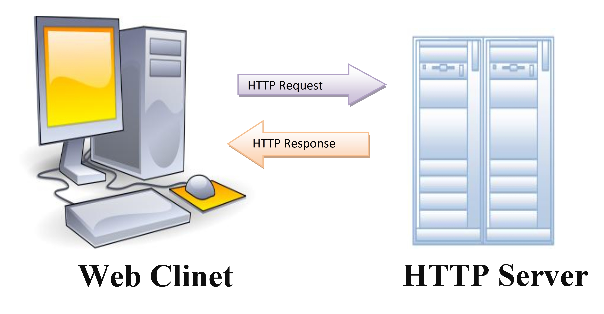
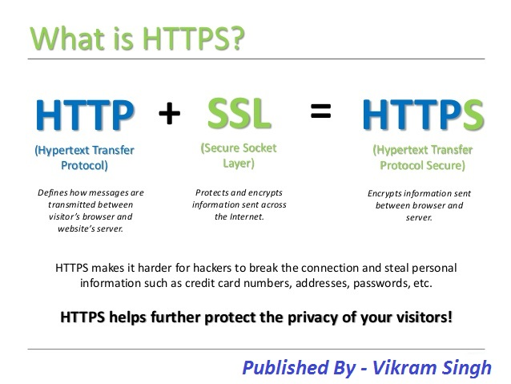

HTTP and HTTPS Protocols
What is HTTP?
HTTP stands for Hyper Text Transfer Protocol. It is the data transfer protocol used by the World Wide Web, or the language that one computer uses to ask another for a document. So, in a web browser, you would type in the URL and hit enter. Your computer then startes talking to another computer called a server. Your computer requests your desired website from the server, and the server answers the computer using HTTP.
This diagram depicts how HTTP requests are sent.
HTTP is mainly made up of "GET" requests. To get to the Tumbler Login page, your computer would say GET/, followed by the Tumblr login page information. Essentially the computer is asking for all of the HTML code for the login page. You can learn about HTML here. One thing to note is that images and videos for a site are not included in the HTML code. They are separate files with their own URLs and need to be requested. The browser sends separate requests for the images and videos and they populate as they arrive. Each image or video causes its own HTTP request, which causes the page to load slower.
Sometimes when you browse the web you actually send information, like when filling out a form or typing a search query. Your browser transfers this information via a POST request. Based on the information sent, the server will send back the corresponding webpage. For example, if John logs into Tumblr, he would receive his Tumblr Account Homepage back. There is also cookie data sent that your browser sees and knows how to save. Cookie data is like an ID card that lets the web browser remember who you are.
What is HTTPS?
HTTPS stands for Hypertext Transfer Protocol Secure. It is an extension of HTTP used for secure communication over the internet.
The internet is open, and information is sent in plain text. This makes information sent through the web able to be exposed to hackers! Safe websites prevent snooping by communicating on a secure channel using Secure Sockets Layer(SSL) and Transport Layer Security(TLS). SSL and TLS are a layer of security wrapped around your communications and are represented by the lock next to the HTTPS. HTTPs uses public key encryption to exchange data with the website you are using. Public key cryptography is the foundation of all secure messaging on open internet. Computers use asymmetric keys; a public key that can be exchanged with anybody and a private key that is not shared. The public key is used to encrypt data and anybody can use it to create a secret message. The secret can only be decrypted by a computer with access to the private key. Public key cryptography includes SSL and TLS protocols to protect us when browsing the web.
This diagram decribes HTTPS.
When a website asks your browser to engage securely, it provides a digital certificate, which is like an official ID card proving it is the website that it claims to be. Certificates are given by certificate authorities which are trusted entities that verify the identities of websites and issue certificates for them. If a website starts to send a transmission without a verified certificate your browser will warn you. It is important to pay attention to this to prevent information from getting into the wrong hands!
HTTP Representation

HTTPS representation